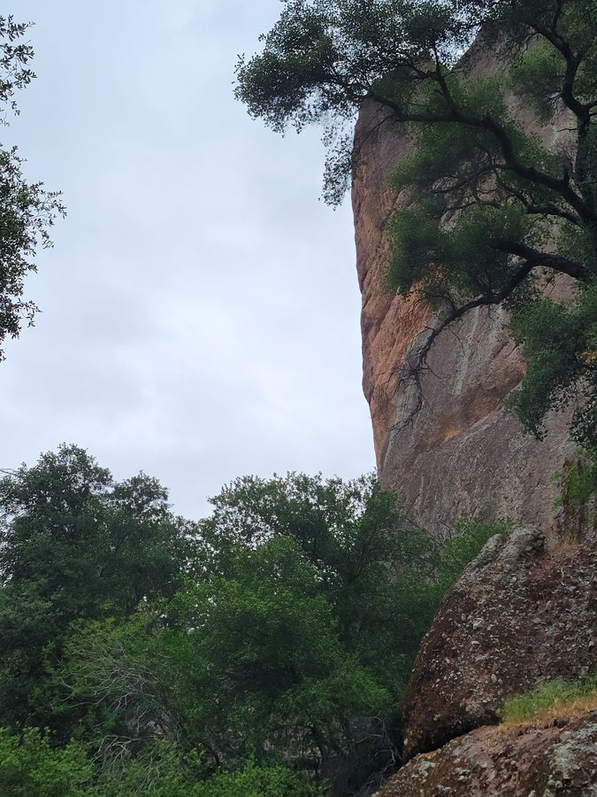
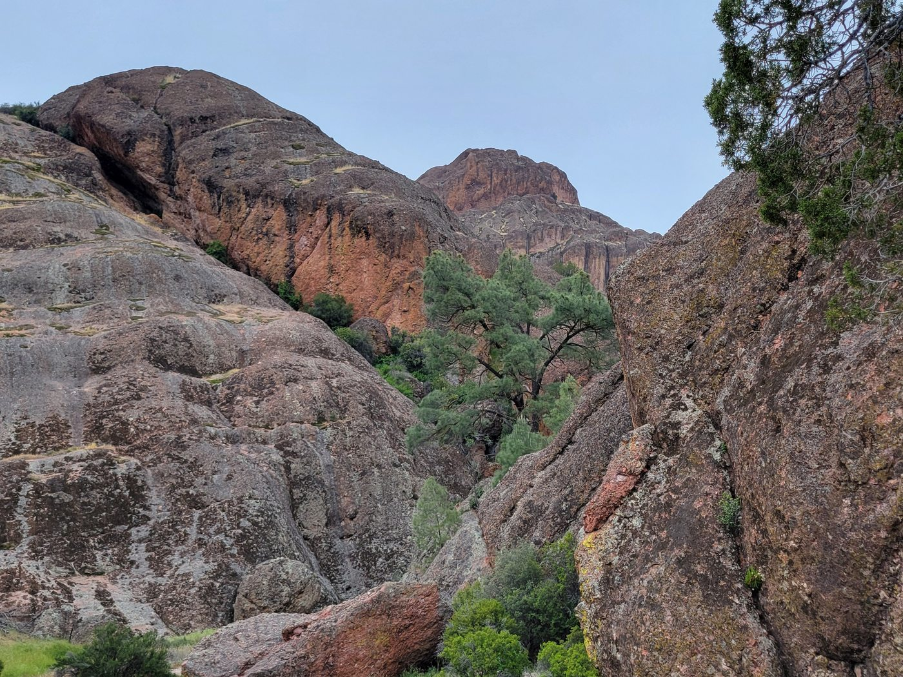

Sunday, April 26, 2026
Overcast skies softened the volcanic rock into deep reds and greys as I hiked through the gorges and along the cliffs of Pinnacles on a quiet Sunday afternoon.

April 26 – May 3, 2026
A week trip centered around San Luis Obispo county including Hearst Castle, Paso Robles, Pismo Beach, and more.
